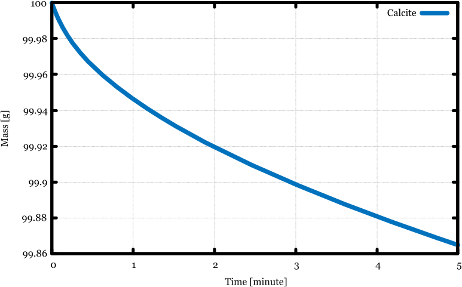
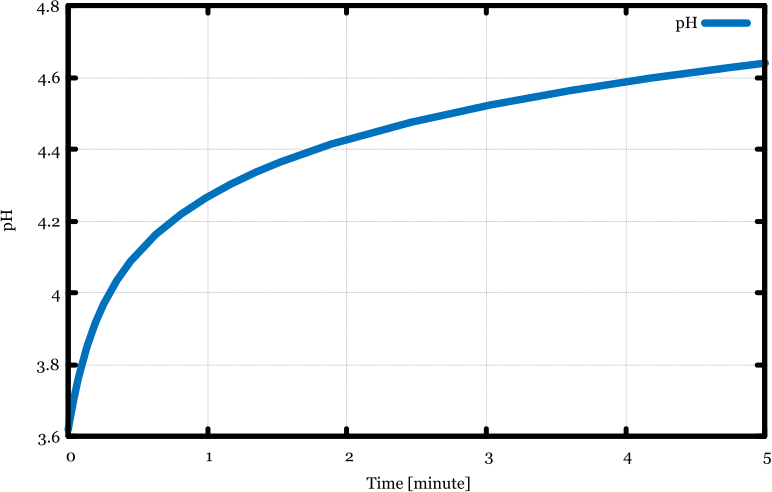
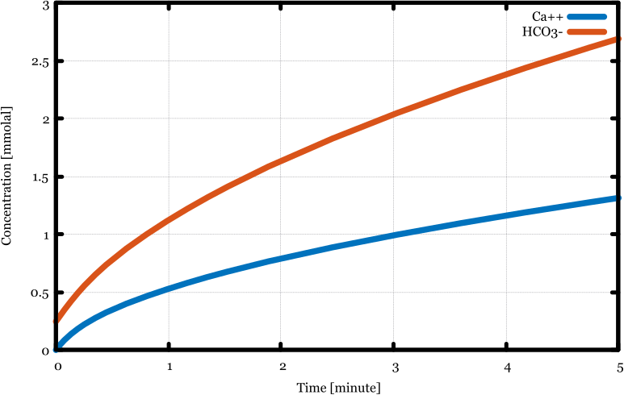

Overview¶
Below is a quick overview of the chemical equilibrium and kinetics capabilities of Reaktoro. Read this entire guide to learn more about what you can do with Reaktoro!
Chemical Equilibrium¶
Here is a simple C++ code using Reaktoro to perform a multiphase chemical equilibrium calculation:
#include <Reaktoro/Reaktoro.hpp>
using namespace Reaktoro;
int main()
{
ChemicalEditor editor;
editor.addAqueousPhaseWithElementsOf("H2O NaCl CaCO3 CO2");
editor.addGaseousPhase("CO2(g)");
editor.addMineralPhase("Calcite");
ChemicalSystem system(editor);
EquilibriumProblem problem(system);
problem.add("H2O", 1, "kg");
problem.add("CO2", 1, "mol");
problem.add("NaCl", 0.7, "mol");
problem.add("CaCO3", 1, "g");
ChemicalState state = equilibrate(problem);
state.output("result.txt");
}
This calculation could also be performed using Reaktoro’s Python interface:
from reaktoro import *
editor = ChemicalEditor()
editor.addAqueousPhase('H2O NaCl CaCO3 CO2')
editor.addGaseousPhase('CO2(g)')
editor.addMineralPhase('Calcite')
system = ChemicalSystem(editor)
problem = EquilibriumProblem(system)
problem.add('H2O', 1, 'kg')
problem.add('CO2', 1, 'mol')
problem.add('NaCl', 0.7, 'mol')
problem.add('CaCO3', 1, 'g')
state = equilibrate(problem)
state.output('result.txt')
Chemical Kinetics¶
Reaktoro can also perform chemical kinetic calculations with both equilibrium-controlled and kinetically-controlled reactions. The C++ example below demonstrate this for a simple mineral dissolution modeling, in which CaCO3(s, calcite) reacts with a carbonated aqueous solution:
#include <Reaktoro/Reaktoro.hpp>
using namespace Reaktoro;
int main()
{
ChemicalEditor editor;
editor.addAqueousPhase("H2O CO2 CaCO3");
editor.addMineralPhase("Calcite");
MineralReaction reaction = editor.addMineralReaction("Calcite");
reaction.setEquation("Calcite = Ca++ + CO3--");
reaction.addMechanism("logk = -5.81 mol/(m2*s); Ea = 23.5 kJ/mol");
reaction.addMechanism("logk = -0.30 mol/(m2*s); Ea = 14.4 kJ/mol; a[H+] = 1.0");
reaction.setSpecificSurfaceArea(10, "cm2/g");
ChemicalSystem system(editor);
ReactionSystem reactions(editor);
Partition partition(system);
partition.setKineticSpecies({"Calcite"});
EquilibriumProblem problem(system);
problem.setPartition(partition);
problem.setTemperature(60, "celsius");
problem.setPressure(100, "bar");
problem.add("H2O", 1, "kg");
problem.add("CO2", 0.1, "mol");
ChemicalState initialstate = equilibrate(problem);
initialstate.setSpeciesMass("Calcite", 100, "g");
KineticPath path(reactions);
path.setPartition(partition);
ChemicalPlot plot1 = path.plot();
plot1.x("time(units=minute)");
plot1.y("speciesMass(Calcite units=g)", "Calcite");
plot1.xlabel("Time [minute]");
plot1.ylabel("Mass [g]");
ChemicalPlot plot2 = path.plot();
plot2.x("time(units=minute)");
plot2.y("pH");
plot2.xlabel("Time [minute]");
plot2.ylabel("pH");
ChemicalPlot plot3 = path.plot();
plot3.x("time(units=minute)");
plot3.y("speciesMolality(Ca++ units=mmolal)", "Ca++");
plot3.y("speciesMolality(HCO3- units=mmolal)", "HCO3-");
plot3.xlabel("Time [minute]");
plot3.ylabel("Concentration [mmolal]");
path.solve(initialstate, 0, 5, "minute");
}
When the application is executed, the following figures are produced:
  {kind=link}
{kind=link}
{kind=link}
In the example above, the mineral reaction is specified to be under kinetic control and the aqueous species in chemical equilibrium at all times. As the mineral dissolves, it perturbs the chemical equilibrium state of the aqueous species. By assuming the aqueous species to be always in equilibrium, it is like if they were capable of reacting instantaneously to a new state of equilibrium. In general, the aqueous species react among themselves at much faster rates than mineral dissolution reactions, and thus this partial equilibrium assumption is plausible, and fairly accurate in most cases.